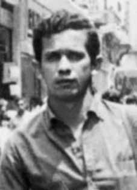

Odijas
Carvalho
de Souza
CIRCUNSTÂNCIAS DA MORTE
Odijas Carvalho de Souza foi morto em consequência de atos de tortura praticados por agentes estatais, quando estava preso no DOPS/PE, no Recife. No dia 30 de janeiro de 1971, na praia de Maria Farinha, município de Paulista (PE), Odijas Carvalho de Souza foi preso junto com Lylia da Silva Guedes, em uma ação de repressão aos membros do PBCR, organização à qual pertenciam. Os policiais Edmundo Brito de Lima, Ivaldo Nicomedes Vieira, Izaias Alves da Silva e Severino Pereira da Silva foram os responsáveis pela prisão de Odijasii.
Ele foi torturado por uma semana, desde o momento de sua prisão no dia 30 de janeiro até o dia 6 de fevereiro de 1971, data em que foi levado para o Hospital da Polícia Militar de Pernambuco, gravemente debilitado pela violência a que foi submetido. Odijas faleceu dois dias depois, em 8 de fevereiro de 1971, no Hospital da Polícia Militar de Pernambuco, no Recife. A falsa versão foi consubstanciada no certidão de óbito com data de 10 de fevereiro de 1971 , assinado pelo médico-tenente da Polícia Militar de Pernambuco Ednaldo Paz de Vasconcelos, do Instituto Médico-Legal de Pernambuco, que registrou a morte de Odijas como consequência de uma “embolia pulmonar”. Não foi realizada, no entanto, perícia necroscópica no corpo de Odijas para averiguar a causa da morte.
O falecimento de Odijas somente foi divulgado formalmente pela Secretaria de Segurança no dia 28 de fevereiro de 1971, ou seja, 20 dias após sua morte. O corpo de Odijas foi sepultado, como indigente, no Cemitério Santo Amaro, no Recife, registrado como “Osias Carvalho de Souza”, grafado erroneamente, como forma de dificultar a identificação e a localização. A falsa versão foi reproduzida nos Relatórios das Forças Armadas entregues ao então Ministro da Justiça, Maurício Correa, em dezembro de 1993.
Segundo o Relatório do Ministério da Marinha, sobre Odijas Carvalho de Souza: “FEV/71, nome falso, HILTON ALENCAR ARAUJO. Era militante. Foi preso em JAN 71, num “aparelho‟ do PCBR, localizado na Maria Farinha, em Paulista/PE. Faleceu no dia 8 FEV 71.” Os depoimentos de militantes políticos que estavam presos no DOPS/PE no mesmo período em que Odijas demonstraram a falsidade da versão divulgada à época e relataram as múltiplas torturas a que o militante do PCBR foi submetido.
Relatório publicado pela Anistia Internacional, assinado pela esposa de Odijas Carvalho de Souza, Maria Yvone de Souza Loureiro, e tendo como testemunha a militante política presa junto com ele, Lylia da Silva Guedes, de 14 de maio de 1971, apresentou detalhes sobre as circunstâncias de morte da vítima.
De acordo com o documento, médicos do Hospital da Polícia Militar de Pernambuco recusaram-se a assinar a certidão de óbito de Odijas, que fora visto em coma por estudantes universitários que faziam um curso de treinamento no hospital. Além disso, o relato apontou entre os principais responsáveis pelas torturas praticadas contra Odijas os delegados Carlos de Brito e Aquino de Farias Rei, ambos do DOPS/PE. Foi destacado no documento que Odijas não confessou ou fez qualquer revelação pra os agentes da repressão e por essa razão foi brutalmente torturado.
Maria Yvone, também presa no DOPS/PE no momento da morte de Odijas, soube do falecimento do marido apenas no dia 2 de março de 1971, ou seja, quase um mês após o fato. Durante esse período, nas vezes em que Maria Yvone pediu informações de Odijas para o secretário Armando Samico, ele omitiu a morte do militante. Finalmente, o relatório para a anistia internacional revelou que Odijas havia sido sepultado sem um exame necroscópico ou autópsia e, até aquele momento, a família não tinha conhecimento do local exato desse sepultamento e não tinha tido acesso ao corpo.
Tarzan de Castro, ex-preso político e ex-deputado do estado de Goiás, preso no mesmo local e na mesma época em que Odijas, em depoimento prestado à CEMDP no requerimento para reconhecimento de Odijas como morto político, relatou as graves torturas que resultaram na morte do militante do PCBR: […] Quase sob os nossos olhares, em uma sala ao lado das celas, começaram os interrogatórios e as torturas sobre Odijas, na medida em que ele resistia, aumentava a sanha dos torturadores que usavam nos espancamentos pedaços de pau, palmatória, socos, chutes, choques elétricos e outros meios.
Algumas vezes Odijas era levado ao banheiro ao lado da nossa cela, para ser molhado com intuito de reabilitá-lo, para suportar mais torturas, sendo que nestes momentos tínhamos oportunidade de nos falar rapidamente. Os efeitos da tortura eram muito grandes, tanto física como psicologicamente e ele nos dizia: “se durar mais este massacre, sinto que vão me matar”. A sessão de interrogatório durou aproximadamente um dia e uma noite, ele estava todo quebrado por dentro e por fora. Quando foi jogado numa cela ao lado da nossa e não lhe dera assistência médica, nos protestamos, batendo nas grades, gritando e exigindo cuidados médicos para ele.
Numa das vezes do protesto, apareceram na prisão o secretário de Segurança Pública Dr. Samico, acompanhado do delegado José Silvestre, ocasião em que conversamos com eles e explicamos se não houvesse de imediato assistência, o companheiro torturado iria morrer. Ele vomitava sangue, não conseguia se alimentar, o intestino não funcionava e não urinava. O secretário respondeu-nos em gíria policial que aquilo era “esparro” [fingimento de Odijas] que sua saúde estava muito boa e nada foi feito.
Passado alguns dias, apareceu uma pessoa que se dizia médico, disse que tudo estava bem com ele. Quando decidiram levá-lo para o hospital, ele já estava praticamente morto, o que infelizmente de fato veio a ocorrer dias após […]. Lylia da Silva Guedes, presa e torturada na mesma ocasião da prisão e morte de Odijas, identificou os agentes responsáveis pela grave violação: Que deseja declarar ter sido torturada no DOPS de Recife, pelos investigadores MIRANDA e EDMUNDO, em dois dias consecutivos, quatro horas cada dia; que assistiu quando um outro prisioneiro era torturado, sendo tal prisioneiro de nome ODIJAS CARVALHO DE SOUZA; que o referido indivíduo se encontrava sentado, despido e era agredido por cerca de quinze pessoas; que a interrogada reconheceria cerca de dez dessas pessoas, entre estas: MIRANDA, EDMUNDO, EUSÉBIO, DR. CARLOS DE BRITTO, FAUSTO, ROCHA, BRITO, sendo as torturas comandadas pelo Dr. SILVESTRE, atual diretor do DOPS de Recife-PE; que, em consequência das torturas, ODIJAS CARVALHO veio a falecer; que a interroganda já se encontrava coagida e amedrontada quando deu seu interrogatório pelo Major JOÃO ALFREDO; que o referido major não chegou a maltratar a interrogada, tendo, no entanto, a ameaçado. (…) que a interroganda pôde relacionar os diversos elementos que torturaram ODIJAS por já reconhecer os referidos indivíduos do DOPS de Recife e vê-los diariamente, inclusive, quando foi torturada dois dias; que os jornais noticiaram a morte de ODIJAS, como tendo ocorrida no dia 8 de fevereiro em virtude de “embolia pulmonar”;
(…) Segundo depoimento de Alberto Vinícius Melo de Nascimento, que estava preso no DOPS/PE e presenciou as violências a que Odijas Carvalho de Souza foi submetido: […] que, aqui no DOPS, presenciou a tortura […] porque passou um preso por nome Odijas; que, após essas torturas, o referido preso veio a falecer […] que o responsável por essas ocorrências é o próprio Delegado do DOPS, que é o Dr. Silvestre; que, segundo Odijas lhe contou em vida, existe um investigador que é responsável por torturas; que esse investigador foi um dos torturadores de Odijas, chegando a bater no mesmo até se cansar, segundo relato do próprio Odijas; que esse investigador atende pelo nome de Miranda.
[…] Mario Miranda Albuquerque, à época estudante, na Apelação nº 39.155, no Superior Tribunal Militar, volume 4º, p. 749, no auto de interrogatório, afirmou: (…) que das testemunhas arroladas na denuncia conhece as de nomes Edmundo Brito de Lima, Fausto Venâncio da Silva; que o interrogado tem a declarar contra as duas primeiras testemunhas haverem eles praticado torturas contra si e ainda contra o marido de Maria Yvone, de nome Odijas;
[…] Jorge Tasso, advogado e delegado aposentado da Polícia Civil de Pernambuco, em testemunho prestado na sessão pública realizada pela Comissão Estadual da Memória e Verdade Dom Helder Câmara no dia 31 de julho de 2012, apresentou informações importantes sobre a cadeia de comando e a autoria de graves violações de direitos humanos cometidas contra Odijas Carvalho de Souzaix: Nadja BraynerMas também naquela época era rotina se chamar outro preso pra presenciar o massacre do companheiro, como uma forma também de intimidar e assustar.
Agora, no caso de Odijas, ele chegou a pedir ajuda a Alberto Vinicius, quando ele passou num determinado momento e estava todo ensanguentado, e pediu uma roupa pra se recompor, tal estado em que ele se encontrava. Isso foi denúncia formal dos presos políticos. Mas a minha pergunta o seguinte, o senhor disse que não tinha tomado conhecimento da tortura. Se perguntou sobre alguns policiais da época, e aí minha pergunta bem direta: O delegado Aquino Farias foi inclusive nomeado por esses presos políticos, como um dos integrantes, ele era delegado na época, 1971, 1972.
E a minha pergunta pro senhor o seguinte: O senhor tem ideia que tipo de esclarecimento o senhor poderia nos dar sobre a participação de Aquino Farias nesse episódio, nesse massacre que foi feito a Odijas? Jorge Tasso: Eu não posso informar quem estava lá . Eu garanto que o delegado era Dr. Jos Silvestre, e o que se comentava era que, chegou-se até a comentar que Odijas havia se atirado lá de cima, do primeiro andar; depois veio um problema que ele teria tido um outro problema e foi socorrido pro Hospital da Polícia Militar, onde morreu. E a causa mortis dele foi dada pelo setor de Medicina Legal, eu aqui acrescentaria como responsabilidade minha, obedecendo ordens de alguém lá de cima. O secretário de segurança era Dr. Armando Samico. Pedro Eurico: Dr. Jorge, Dra. Nadja.
Apenas pra rememorar, eu perguntaria ao senhor, Dr. Silvestre era o diretor do DOPS? Jorge Tasso: Era o diretor do DOPS dessa época. Pedro Eurico: Dr. Ednaldo Agra era delegado? Jorge Tasso: Ednaldo Agra, se não me falha a memória, era diretor do CI, Centro de Informações. E Dr. Edvaldo Cruz trabalhava numa delegacia ligada ao DOPS. Pedro Eurico: Luis Miranda estava lá nessa época também? Jorge Tasso: Miranda nunca foi agente de poliícia. Miranda era um araque, violento, agressivo, trabalhou como jornalista no jornal, no Diário da Manhã.
Eu, inclusive, trabalhei uma época no Jornal do Comércio, e ele trabalhava, e eu conhecia ele. E ele era um infiltrado dentro da polícia, como era o que ela citou o nome, Humberto Amaro de Souza; agora eu não sei se ele estava presente, eu não sei a ligação dele com o pessoal do DOPS. Miranda era mais ligado ao pessoal do DOI-CODI, ligadíssimo.
Nadja Brayner: em 1971? Jorge Tasso: nessa época, que foi na época que eu entrei. Nadja Brayner: Porque as informações que se tem que Miranda estava vinculado ao DOPS. Jorge Tasso: Não, mas ele nunca foi agente de polícia, ele era um araque, ele tinha carteira de jornalista, trabalhou nos jornais, crônica esportiva no Diário, um jornal pequeno, mas polícia nunca foi. Agora, agressivo e violento.
A advogada Mércia Albuquerque, defensora de inúmeros presos políticos, relatou o contato que teve com Odijas no dia em que antecedeu a morte do militante político: Não se tinha certeza da prisão de Odijas e Lígia, sobretudo porque sabíamos que ele havia saído daqui. Recebi um telefonema anônimo, que me informava que Odijas estava preso no DOPS, muito mal, precisando de um médico. Tudo indicava que havia rotura de vísceras. Eu gostava muito de Odijas. Fiquei tensa. Procurei amigos que começaram, com cautela, a se movimentar e constataram que a informação era verdadeira.
Procurei o Dr. Francisco de Paula Acioly. Pedi sua ajuda. Ele foi à polícia e me informou que Odijas estava no Hospital da Polícia Militar. No dia 7 de fevereiro, consegui entrar clandestinamente naquele hospital. Odijas tinha muita febre, apresentava equimoses em todo o corpo, usava apenas uma cueca ou um calção. O rosto estava macerado e roxo. Olhou-me e disse-me: “Estou fodido”. Riu, fechou os olhos e disse alguns nomes. Passei a mão de leve na cabeça dele, beijei-o e saí desorientada.
Eu não chorava, eu sofria, sofria muito. Já ia pela Praça do Derby, sentindo-me sufocada, quando parou um carro, um amigo me chamou. Entrei no automóvel. Desci em minha casa. Implorei a Deus que fizesse parar com tanta tragédia. No dia 8, morria Odijas com 25 anos. A Comissão Estadual da Memória e Verdade Dom Helder Câmara (CEMVDHC), de Pernambuco, conseguiu, na 12ª Vara de Família e Registro Civil da Comarca da Capital, a retificação da certidão de óbito de Odijas e a causa mortis foi alterada para “homicídio por lesões corporais múltiplas decorrentes de atos de tortura”.
Odijas Carvalho de Souza was killed as a result of acts of torture carried out by state agents, when he was imprisoned at DOPS/PE, in Recife. On January 30, 1971, on Maria Farinha beach, in the municipality of Paulista (PE), Odijas Carvalho de Souza was arrested together with Lylia da Silva Guedes, in an action to repress members of the PBCR, the organization to which they belonged. Police officers Edmundo Brito de Lima, Ivaldo Nicomedes Vieira, Izaias Alves da Silva and Severino Pereira da Silva were responsible for Odijasii's arrest.
He was tortured for a week, from the moment of his arrest on January 30th until February 6th, 1971, the date on which he was taken to the Military Police Hospital of Pernambuco, seriously weakened by the violence to which he was subjected. Odijas died two days later, on February 8, 1971, at the Pernambuco Military Police Hospital, in Recife. The false version was substantiated in the death certificate dated February 10, 1971, signed by the lieutenant doctor of the Pernambuco Military Police Ednaldo Paz de Vasconcelos, from the Pernambuco Medical-Legal Institute, who recorded Odijas' death as a consequence of a “pulmonary embolism”. However, no necroscopic examination was carried out on Odijas' body to ascertain the cause of death.
Odijas' death was only formally announced by the Security Secretariat on February 28, 1971, that is, 20 days after his death. Odijas' body was buried, as a pauper, in the Santo Amaro Cemetery, in Recife, registered as “Osias Carvalho de Souza”, misspelled, as a way of making identification and location difficult. The false version was reproduced in the Armed Forces Reports delivered to the then Minister of Justice, Maurício Correa, in December 1993.
According to the Report from the Ministry of the Navy, about Odijas Carvalho de Souza: “FEB/71, false name, HILTON ALENCAR ARAUJO. He was a militant. He was arrested in JAN 71, in a PCBR “apparatus”, located in Maria Farinha, in Paulista/PE. He passed away on 8 FEB 71.” The testimonies of political activists who were imprisoned in the DOPS/PE during the same period in which Odijas demonstrated the falsity of the version released at the time and reported the multiple tortures to which the PCBR activist was subjected.
Report published by Amnesty International, signed by Odijas Carvalho de Souza's wife, Maria Yvone de Souza Loureiro, and having as a witness the political activist arrested with him, Lylia da Silva Guedes, on May 14, 1971, presented details about the circumstances of the victim's death.
According to the document, doctors at the Military Police Hospital of Pernambuco refused to sign the death certificate of Odijas, who had been seen in a coma by university students who were taking a training course at the hospital. Furthermore, the report pointed out that the chiefs responsible for the torture carried out against Odijas were Carlos de Brito and Aquino de Farias Rei, both from DOPS/PE. It was highlighted in the document that Odijas did not confess or make any revelations to the repression agents and for this reason he was brutally tortured.
Maria Yvone, also imprisoned at DOPS/PE at the time of Odijas' death, only learned of her husband's death on March 2, 1971, that is, almost a month after the fact. During this period, when Maria Yvone asked Secretary Armando Samico for information about Odijas, he omitted the militant's death. Finally, the report for Amnesty International revealed that Odijas had been buried without a necroscopic examination or autopsy and, until that moment, the family had no knowledge of the exact location of this burial and had not had access to the body.
Tarzan de Castro, former political prisoner and former deputy for the state of Goiás, arrested in the same place and at the same time as Odijas, in a statement given to CEMDP in the application for recognition of Odijas as a political dead, reported the serious torture that resulted in the death of the PCBR activist: […] Almost under our eyes, in a room next to the cells, the interrogations and torture of Odijas began, as he resisted, the anger of the torturers increased, using sticks, paddles, punches, kicks, electric shocks and other means in the beatings.
Sometimes Odijas was taken to the bathroom next to our cell, to be wetted with the intention of rehabilitating him, to endure more torture, and at these moments we had the opportunity to speak briefly. The effects of the torture were very great, both physically and psychologically and he told us: “if this massacre lasts any longer, I feel like they will kill me”. The interrogation session lasted approximately one day and one night, he was all broken inside and out. When he was thrown into a cell next to ours and was not given medical assistance, we protested, banging on the bars, shouting and demanding medical attention for him.
During one of the protests, Public Security Secretary Dr. Samico appeared at the prison, accompanied by deputy José Silvestre, at which time we spoke to them and explained that if there was no immediate assistance, the tortured companion would die. He vomited blood, couldn't eat, his intestines didn't work and he didn't urinate. The secretary answered us in police slang that it was “sparro” [Odijas's pretense] that his health was very good and nothing was done.
After a few days, a person who called himself a doctor appeared and said that everything was fine with him. When they decided to take him to the hospital, he was practically dead, which unfortunately actually happened days later […]. Lylia da Silva Guedes, arrested and tortured on the same occasion as Odijas' arrest and death, identified the agents responsible for the serious violation: Who wishes to declare that she was tortured at the DOPS in Recife, by investigators MIRANDA and EDMUNDO, on two consecutive days, four hours each day; who watched as another prisoner was tortured, the prisoner named ODIJAS CARVALHO DE SOUZA; that the aforementioned individual was sitting, naked and was being attacked by around fifteen people; that the person being questioned would recognize around ten of these people, including: MIRANDA, EDMUNDO, EUSÉBIO, DR. CARLOS DE BRITTO, FAUSTO, ROCHA, BRITO, with the torture commanded by Dr. SILVESTRE, current director of the DOPS in Recife-PE; that, as a result of the torture, ODIJAS CARVALHO died; that the interrogated woman was already coerced and frightened when she was interrogated by Major JOÃO ALFREDO; that the aforementioned major did not actually mistreat the interrogated woman, having, however, threatened her. (…) that the interrogator was able to relate the various elements that tortured ODIJAS because she already recognized the aforementioned individuals from the Recife DOPS and saw them daily, including when she was tortured for two days; that the newspapers reported ODIJAS' death as having occurred on February 8 due to a “pulmonary embolism”;
(…) According to the testimony of Alberto Vinícius Melo de Nascimento, who was imprisoned at DOPS/PE and witnessed the violence to which Odijas Carvalho de Souza was subjected: […] who, here at DOPS, witnessed the torture […] because a prisoner called Odijas passed by; that, after these tortures, the aforementioned prisoner died […] that the person responsible for these events is the DOPS Delegate himself, who is Dr. Silvestre; that, according to Odijas told him in life, there is an investigator who is responsible for torture; that this investigator was one of Odijas' torturers, even beating him until he got tired, according to Odijas himself; This investigator goes by the name Miranda.
[…] Mario Miranda Albuquerque, at the time a student, in Appeal No. 39,155, at the Superior Military Court, volume 4, p. 749, in the interrogation report, he stated: (…) that of the witnesses listed in the complaint he knows those named Edmundo Brito de Lima, Fausto Venâncio da Silva; that the person being questioned has to declare against the first two witnesses that they had tortured him and Maria Yvone's husband, named Odijas;
[…] Jorge Tasso, lawyer and retired delegate of the Civil Police of Pernambuco, in his testimony given at the public session held by the State Commission for Memory and Truth Dom Helder Câmara on July 31, 2012, presented important information about the chain of command and the authorship of serious human rights violations committed against Odijas Carvalho de Souzaix: Nadja BraynerBut also at that time it was routine to call another prisoner to witness the massacre of his companion, as a way also to intimidate and frighten.
Now, in the case of Odijas, he even asked Alberto Vinicius for help, when he passed by at a certain moment and was all bloody, and asked for some clothes to put himself back together, given the state he was in. This was a formal denunciation of political prisoners. But to my question, you said that you had not been aware of the torture. He asked about some police officers at the time, and here is my very direct question: Chief Aquino Farias was even named by these political prisoners, as one of the members, he was a police chief at the time, 1971, 1972.
And my question to you is the following: Do you have any idea what kind of clarification you could give us about Aquino Farias's participation in this episode, in this massacre that was carried out in Odijas? Jorge Tasso: I can't say who was there. I guarantee that the delegate was Dr. Jos Silvestre, and what was said was that it was even said that Odijas had thrown himself from the top, from the first floor; Then there was a problem that caused him to have another problem and he was taken to the Military Police Hospital, where he died. And his cause of death was given by the Forensic Medicine sector, I would add here as my responsibility, following orders from someone up there. The security secretary was Dr. Armando Samico. Pedro Eurico: Dr. Jorge, Dr. Nadja.
Just to remember, I would ask you, was Dr. Silvestre the director of DOPS? Jorge Tasso: He was the director of DOPS at that time. Pedro Eurico: Was Dr. Ednaldo Agra a delegate? Jorge Tasso: Ednaldo Agra, if I remember correctly, was director of the CI, Information Center. And Dr. Edvaldo Cruz worked at a police station linked to the DOPS. Pedro Eurico: Was Luis Miranda there at that time too? Jorge Tasso: Miranda was never a police officer. Miranda was a jerk, violent, aggressive, he worked as a journalist at the newspaper, Diário da Manhã.
I actually worked for a while at Jornal do Comércio, and he worked, and I knew him. And he was an infiltrator within the police, as was the name she mentioned, Humberto Amaro de Souza; Now I don't know if he was present, I don't know his connection with the DOPS people. Miranda was more connected to the DOI-CODI people, very connected.
Nadja Brayner: in 1971? Jorge Tasso: at that time, which was when I joined. Nadja Brayner: Because the information is that Miranda was linked to the DOPS. Jorge Tasso: No, but he was never a police officer, he was a rogue, he had a journalist's license, he worked in newspapers, a sports chronicle in the Diário, a small newspaper, but he was never a police officer. Now aggressive and violent.
Lawyer Mércia Albuquerque, defender of numerous political prisoners, reported the contact she had with Odijas the day before the political activist's death: We were not sure about the arrest of Odijas and Lígia, especially because we knew that he had left here. I received an anonymous call, which informed me that Odijas was detained at DOPS, very ill, in need of a doctor. Everything indicated that there was rupture of the viscera. I really liked Odijas. I tensed. I looked for friends who began, cautiously, to move around and found that the information was true.
I looked for Dr. Francisco de Paula Acioly. I asked for your help. He went to the police and informed me that Odijas was in the Military Police Hospital. On February 7th, I managed to smuggle myself into that hospital. Odijas had a high fever, had bruises all over his body, and was only wearing underwear or shorts. The face was macerated and purple. He looked at me and said: “I’m fucked”. He laughed, closed his eyes and said some names. I placed my hand lightly on his head, kissed him and left, disoriented.
I didn't cry, I suffered, I suffered a lot. I was already walking through Praça do Derby, feeling suffocated, when a car stopped and a friend called me. I got into the car. I went down to my house. I begged God to stop so much tragedy. On the 8th, Odijas died at the age of 25. The Dom Helder Câmara State Memory and Truth Commission (CEMVDHC), from Pernambuco, managed, at the 12th Family and Civil Registry Court of the District of the Capital, to rectify Odijas' death certificate and the cause of death was changed to “homicide due to multiple bodily injuries resulting from acts of torture”.
Odijas Carvalho de Souza fue asesinado como resultado de actos de tortura realizados por agentes estatales, cuando se encontraba detenido en el DOPS/PE, en Recife. El 30 de enero de 1971, en la playa Maria Farinha, en el municipio de Paulista (PE), Odijas Carvalho de Souza fue detenido junto con Lylia da Silva Guedes, en una acción de represión a miembros de la PBCR, organización a la que pertenecían. Los agentes de policía Edmundo Brito de Lima, Ivaldo Nicomedes Vieira, Izaias Alves da Silva y Severino Pereira da Silva fueron los responsables de la detención de Odijasii.
Fue torturado durante una semana, desde el momento de su detención el 30 de enero hasta el 6 de febrero de 1971, fecha en que fue trasladado al Hospital de la Policía Militar de Pernambuco, gravemente debilitado por la violencia a la que fue sometido. Odijas murió dos días después, el 8 de febrero de 1971, en el Hospital de la Policía Militar de Pernambuco, en Recife. La versión falsa fue corroborada en el certificado de defunción de 10 de febrero de 1971, firmado por el teniente médico de la Policía Militar de Pernambuco Ednaldo Paz de Vasconcelos, del Instituto Médico Legal de Pernambuco, quien registró la muerte de Odijas como consecuencia de una “embolia pulmonar”. Sin embargo, no se realizó ningún examen necroscópico al cuerpo de Odijas para determinar la causa de la muerte.
La muerte de Odijas sólo fue anunciada formalmente por la Secretaría de Seguridad el 28 de febrero de 1971, es decir, 20 días después de su muerte. El cuerpo de Odijas fue enterrado, en condición de indigente, en el Cementerio de Santo Amaro, en Recife, registrado como “Osias Carvalho de Souza”, mal escrito, como una forma de dificultar su identificación y localización. La versión falsa fue reproducida en los Informes de las Fuerzas Armadas entregados al entonces Ministro de Justicia, Mauricio Correa, en diciembre de 1993.
Según Informe del Ministerio de la Marina, sobre Odijas Carvalho de Souza: "FEB/71, nombre falso, HILTON ALENCAR ARAUJO. Era militante. Fue detenido en enero de 71, en un "aparato" de la PCBR, ubicado en Maria Farinha, en Paulista/PE. Falleció el 8 de febrero de 71". Los testimonios de activistas políticos que estuvieron detenidos en el DOPS/PE durante el mismo período en el que Odijas demostraron la falsedad de la versión difundida en ese momento y denunciaron las múltiples torturas a las que fue sometido el activista del PCBR.
Informe publicado por Amnistía Internacional, firmado por la esposa de Odijas Carvalho de Souza, María Yvone de Souza Loureiro, y que tuvo como testigo a la activista política detenida junto a ella, Lylia da Silva Guedes, el 14 de mayo de 1971, presentó detalles sobre las circunstancias de la muerte de la víctima.
Según el documento, los médicos del Hospital de la Policía Militar de Pernambuco se negaron a firmar el certificado de defunción de Odijas, que había sido visto en coma por estudiantes universitarios que realizaban un curso de formación en el hospital. Además, el informe señaló que los jefes responsables de las torturas practicadas contra Odijas fueron Carlos de Brito y Aquino de Farias Rei, ambos del DOPS/PE. En el documento se destacó que Odijas no confesó ni hizo revelaciones a los agentes represores y por ello fue brutalmente torturado.
María Yvone, también presa del DOPS/PE en el momento de la muerte de Odijas, sólo se enteró de la muerte de su marido el 2 de marzo de 1971, es decir, casi un mes después del hecho. Durante este período, cuando María Yvone le pidió al secretario Armando Samico información sobre Odijas, éste omitió la muerte del militante. Finalmente, el informe de Amnistía Internacional reveló que Odijas había sido enterrado sin examen necroscópico ni autopsia y, hasta ese momento, la familia desconocía el lugar exacto de este entierro y no había tenido acceso al cuerpo.
Tarzán de Castro, ex preso político y ex diputado por el estado de Goiás, detenido en el mismo lugar y al mismo tiempo que Odijas, en declaración prestada al CEMDP en la solicitud de reconocimiento de Odijas como muerto político, denunció las graves torturas que resultaron en la muerte del activista de la PCBR: […] Casi ante nuestros ojos, en un cuarto contiguo a las celdas, comenzaron los interrogatorios y torturas de Odijas, mientras este resistía, la ira de los torturadores aumentaba, utilizando palos, palas, puñetazos, patadas, descargas eléctricas y otros medios en las golpizas.
En ocasiones a Odijas lo llevaban al baño al lado de nuestra celda, para que lo mojaran con la intención de rehabilitarlo, para que soportara más torturas, y en esos momentos teníamos la oportunidad de hablar brevemente. Los efectos de la tortura fueron muy grandes, tanto física como psicológicamente y nos dijo: “si esta masacre dura más siento que me van a matar”. La sesión de interrogatorio duró aproximadamente un día y una noche, estaba todo destrozado por dentro y por fuera. Cuando lo metieron en una celda contigua a la nuestra y no le brindaron asistencia médica, protestamos golpeando los barrotes, gritando y exigiendo atención médica para él.
Durante una de las protestas, el Secretario de Seguridad Pública, Dr. Samico, se presentó en el penal acompañado del diputado José Silvestre, momento en el que hablamos con ellos y les explicamos que si no había asistencia inmediata, el compañero torturado moriría. Vomitó sangre, no podía comer, sus intestinos no funcionaban y no orinaba. El secretario nos contestó en jerga policial que era “sparro” [el pretexto de Odijas] que estaba muy bien de salud y no se hacía nada.
A los pocos días apareció una persona que se hacía llamar médico y dijo que todo estaba bien para él. Cuando decidieron llevarlo al hospital se encontraba prácticamente muerto, lo que lamentablemente ocurrió días después […]. Lylia da Silva Guedes, detenida y torturada en el mismo momento de la detención y muerte de Odijas, identificó a los agentes responsables de la grave violación: Quien desea declarar que fue torturada en el DOPS de Recife, por los investigadores MIRANDA y EDMUNDO, durante dos días consecutivos, cuatro horas cada día; quien vio cómo torturaban a otro preso, el preso de nombre ODIJAS CARVALHO DE SOUZA; que el mencionado individuo se encontraba sentado, desnudo y estaba siendo atacado por alrededor de quince personas; que el interrogado reconocería una decena de estas personas, entre ellas: MIRANDA, EDMUNDO, EUSÉBIO, DR. CARLOS DE BRITTO, FAUSTO, ROCHA, BRITO, con la tortura comandada por el Dr. SILVESTRE, actual director del DOPS en Recife-PE; que como consecuencia de las torturas murió ODIJAS CARVALHO; que la mujer interrogada ya estaba coaccionada y asustada cuando fue interrogada por el Mayor JOÃO ALFREDO; que en realidad el mencionado mayor no maltrató a la mujer interrogada, sino que la amenazó. (…) que la interrogadora pudo relatar los distintos elementos que torturaron a ODIJAS porque ya reconocía a los mencionados individuos del DOPS de Recife y los veía a diario, incluso cuando fue torturada durante dos días; que los diarios informaron que la muerte de ODIJAS ocurrió el 8 de febrero a causa de una “embolia pulmonar”;
(…) Según el testimonio de Alberto Vinícius Melo de Nascimento, quien estuvo preso en el DOPS/PE y fue testigo de la violencia a la que fue sometido Odijas Carvalho de Souza: […] quien, aquí en el DOPS, fue testigo de la tortura […] porque pasó un preso llamado Odijas; que, luego de estas torturas, el citado detenido falleció […] que el responsable de estos hechos es el propio Delegado del DOPS, quien es el Dr. Silvestre; que, según le contó Odijas en vida, hay un investigador que se encarga de las torturas; que este investigador fue uno de los torturadores de Odijas, llegando incluso a golpearlo hasta cansarlo, según el propio Odijas; Este investigador se llama Miranda.
[…] Mario Miranda Albuquerque, entonces estudiante, en el Recurso de Recurso No. 39.155, ante el Tribunal Superior Militar, tomo 4, f. 749, en el informe del interrogatorio afirmó: (…) que de los testigos que figuran en la denuncia conoce a los llamados Edmundo Brito de Lima, Fausto Venâncio da Silva; que el interrogado debe declarar contra los dos primeros testigos que lo habían torturado a él y al marido de María Yvone, de nombre Odijas;
[…] Jorge Tasso, abogado y delegado retirado de la Policía Civil de Pernambuco, en su testimonio prestado en la sesión pública celebrada por la Comisión Estatal para la Memoria y la Verdad Dom Helder Câmara el 31 de julio de 2012, presentó importantes informaciones sobre la cadena de mando y la autoría de graves violaciones de derechos humanos cometidas contra Odijas Carvalho de Souzaix: Nadja Brayner, pero también en aquella época era habitual llamar a otro preso para presenciar la masacre de su compañero, como una manera también de intimidar y asustar.
Ahora bien, en el caso de Odijas, incluso pidió ayuda a Alberto Vinicius, cuando en determinado momento pasó por allí y estaba todo ensangrentado, y le pidió algo de ropa para recomponerse, dado el estado en el que se encontraba. Esta fue una denuncia formal a los presos políticos. Pero a mi pregunta usted dijo que no había tenido conocimiento de la tortura. Preguntó sobre algunos policías de la época, y aquí está mi pregunta muy directa: el jefe Aquino Farías incluso fue nombrado por estos presos políticos, como uno de los miembros, él era jefe de policía en ese momento, 1971, 1972.
Y mi pregunta para usted es la siguiente: ¿Tiene alguna idea de qué tipo de aclaración podría darnos sobre la participación de Aquino Farías en este episodio, en esta masacre que se hizo en Odijas? Jorge Tasso: No puedo decir quién estaba allí. Les garantizo que el delegado era el doctor José Silvestre, y lo que se dijo fue que incluso se dijo que Odijas se había tirado desde arriba, desde el primer piso; Luego hubo un problema que le provocó otro problema y lo llevaron al Hospital de la Policía Militar, donde falleció. Y su causa de muerte la dio el sector de Medicina Legal, agregaría aquí como mi responsabilidad, siguiendo órdenes de alguien de allá arriba. El secretario de seguridad era el doctor Armando Samico. Pedro Eurico: Dr. Jorge, Dra. Nadja.
Sólo para recordar, les preguntaría, ¿el Dr. Silvestre era el director del DOPS? Jorge Tasso: Era el director del DOPS en ese momento. Pedro Eurico: ¿Era delegado el Dr. Ednaldo Agra? Jorge Tasso: Ednaldo Agra, si mal no recuerdo, era director del CI, Centro de Información. Y el doctor Edvaldo Cruz trabajaba en una comisaría vinculada al DOPS. Pedro Eurico: ¿Luis Miranda también estaba allí en ese momento? Jorge Tasso: Miranda nunca fue policía. Miranda era un imbécil, violento, agresivo, trabajaba como periodista en el diario Diário da Manhã.
De hecho, trabajé un tiempo en el Jornal do Comércio, él trabajaba y lo conocía. Y era un infiltrado dentro de la policía, como lo era el nombre que ella mencionó, Humberto Amaro de Souza; Ahora no sé si estuvo presente, no sé su conexión con la gente del DOPS. Miranda estaba más conectada con la gente del DOI-CODI, muy conectada.
Nadja Brayner: ¿en 1971? Jorge Tasso: en ese momento, que fue cuando entré. Nadja Brayner: Porque la información es que Miranda estaba vinculada al DOPS. Jorge Tasso: No, pero nunca fue policía, era un pícaro, tenía licencia de periodista, trabajaba en periódicos, una crónica deportiva en el Diário, un periódico pequeño, pero nunca fue policía. Ahora agresivo y violento.
La abogada Mércia Albuquerque, defensora de numerosos presos políticos, relató el contacto que tuvo con Odijas el día antes de la muerte del activista político: No estábamos seguros de la detención de Odijas y Lígia, sobre todo porque sabíamos que se había ido de aquí. Recibí una llamada anónima, que me informó que Odijas estaba detenido en DOPS, muy enfermo, necesitando un médico. Todo indicaba que hubo rotura de vísceras. Odijas me gustó mucho. Me puse tenso. Busqué amigos que empezaron, cautelosamente, a moverse y comprobé que la información era cierta.
Busqué al doctor Francisco de Paula Acioly. Pedí tu ayuda. Fue a la policía y me informó que Odijas estaba en el Hospital de la Policía Militar. El 7 de febrero logré colarme en ese hospital. Odijas tenía fiebre alta, hematomas en todo el cuerpo y solo vestía ropa interior o pantalones cortos. El rostro estaba macerado y morado. Me miró y dijo: “Estoy jodido”. Él se rió, cerró los ojos y dijo algunos nombres. Puse mi mano ligeramente sobre su cabeza, lo besé y me fui desorientado.
No lloré, sufrí, sufrí mucho. Ya estaba caminando por la Plaza do Derby, sintiéndome asfixiado, cuando un auto se detuvo y un amigo me llamó. Me subí al auto. Bajé a mi casa. Le rogué a Dios que detuviera tanta tragedia. El día 8, Odijas murió a la edad de 25 años. La Comisión Estatal de Memoria y Verdad (CEMVDHC) Dom Helder Câmara, de Pernambuco, logró, en el Juzgado 12 del Registro Civil y de Familia del Distrito de la Capital, rectificar el certificado de defunción de Odijas y se cambió la causa de la muerte a “homicidio por múltiples lesiones corporales resultantes de actos de tortura”.